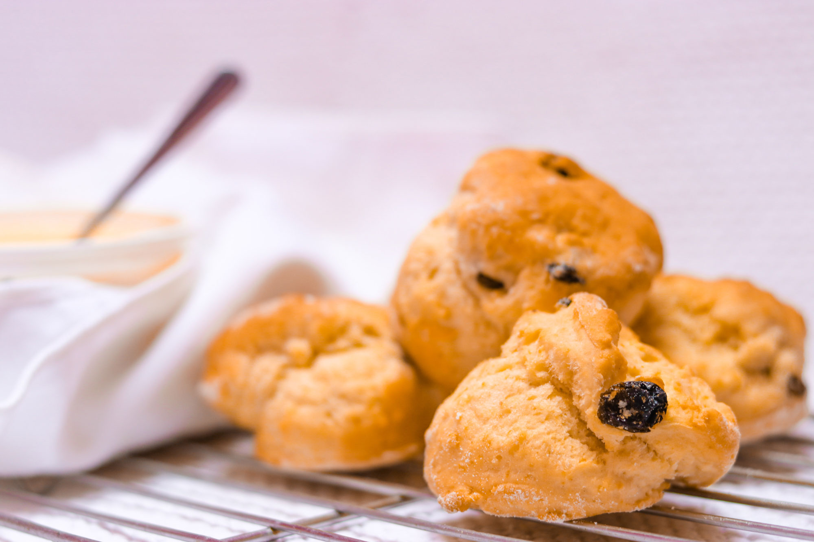

Scones recipe

Description
This is a description about the recipe for delicious scones, find out more about how to bake your own scones by following the recipe and instructions below.
Ingredients
- Butter
- Flour
- Eggs
- Other stuff
Steps
- Mix up the dry
- Mix in the wet
- Bake the stuff
- Eat everything